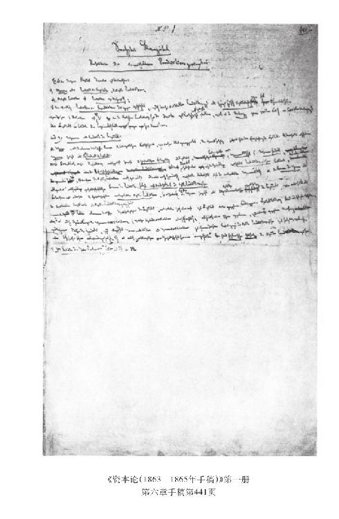
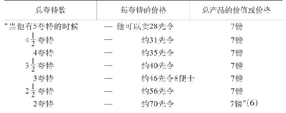
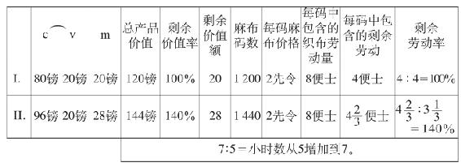
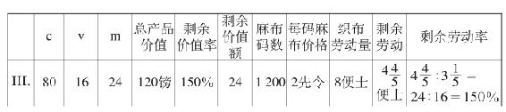
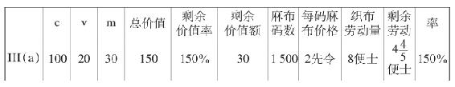
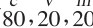

（1）商品作为资本的产物

商品，作为资产阶级财富的元素形式，曾经是我们的出发点，是资本产生的前提。另一方面，商品现在表现为资本的产物。
我们叙述的这种顺序，是同资本的历史发展相一致的；对于这种历史发展来说，商品交换，商品贸易是产生条件之一，而这个产生条件本身又是在这样一些不同生产阶段的基础上形成的，所有这些不同生产阶段的共同之处是：在这些生产阶段中资本主义生产还完全不存在，或者还只是零星地存在。另一方面，发达的商品交换和作为产品的一般必要的社会形式的商品形式本身，又只是资本主义生产方式的结果。
另一方面，如果我们考察发达的资本主义生产的社会，那么在这些社会中，商品既表现为资本的经常的元素前提，又表现为资本主义生产过程的直接结果。
商品和货币两者是资本的元素前提，但是它们只有在一定条件下才发展为资本。资本的形成，除非在商品流通（包含货币流通）的基础上，从而除非在商业的既定的、发展到一定范围的阶段上，是不能发生的；相反，商品生产和商品流通却决不以资本主义生产方式作为自己存在的前提，正如我过去已经阐述过的(1)，不如说属于“资产阶级以前的社会形式”。它们是资本主义生产方式的历史前提。[442]可是，另一方面，只有在资本主义生产的基础上，商品才变为产品的一般形式，所有产品才必须采取商品的形式，买和卖才不仅支配了生产的剩余，而且支配了生产的实体本身，各种生产条件本身才广泛地表现为从流通进入生产过程的商品。所以，如果说一方面商品表现为资本形成的前提，那么另一方面，就商品是产品的一般元素形式而言，它在本质上表现为资本主义生产过程的产物和结果。在以前的各生产阶段中，产品是部分地采取商品的形式。而资本却必然把自己的产品作为商品来生产(2)。因此，随着资本主义生产即资本的发展，关于商品的一般规律，例如涉及价值的各种规律，也是在货币流通的各种形式中实现的。
这里可以看到，在资本主义生产方式的基础上，甚至连属于过去生产时期的经济范畴，也获得了各种特殊的历史的性质。
从本身只是商品转化形式的货币到资本的转化，只能发生在劳动能力对工人本身来说已经转化为商品的时候，从而只能发生在商品贸易的范畴已经征服从前不包括在这个范畴中或者只是偶尔包括在这个范畴中的领域的时候。只有在劳动人口或者本身不再属于客观的劳动条件，或者本身不再作为商品生产者进入市场的时候，只有在劳动人口不再出卖自己劳动的产品，而相反地出卖自己的劳动本身，或者更确切些说，出卖自己的劳动能力的时候，生产才在其整个范围内，在其整个深度和广度内，变成商品生产，一切产品才转化为商品，每个个别生产部门的物的条件本身才作为商品进入该生产部门。只有在资本主义生产的基础上，商品才在事实上成为财富的一般元素形式。例如，如果资本还没有征服农业，那么一大部分产品还将直接作为生存资料来生产，而不是作为商品来生产，一大部分劳动人口还不会变为雇佣工人，一大部分劳动条件还不会转化为资本。这里也包括：社会内部偶然表现出来的发达的分工和工场内部的资本主义分工，彼此制约和交互产生。因为商品作为产品的必要形式，从而产品转让作为占有产品的必要形式，要以充分发展的社会分工为前提；而另一方面，只有在资本主义生产的基础上，从而也只有在工场内部的资本主义分工的基础上，所有产品才必然采取商品的形式，从而一切生产者才必然是商品生产者。因此，只有在资本主义生产下，使用价值才普遍地以交换价值为中介。
三点。
（1）只有资本主义生产才使商品成为一切产品的一般形式。
（2）只有在劳动者不再是生产条件的一部分（奴隶制，农奴制），或者原始共同体（印度）不再是基础的时候，商品生产才必然会导致资本主义生产。就是从劳动力本身普遍地成为商品的时刻起。
（3）资本主义生产扬弃了商品生产的基础，扬弃了孤立的、独立的生产和商品占有者的交换或等价交换。资本和劳动力的交换变成了形式上的。
从这种观点来看，生产条件本身无论以何种形式加入劳动过程，——无论生产条件，例如不变资本的一部分，机器等等，只是把自己的价值逐渐转移到产品上去，还是例如原料，在物质上加入产品；无论[443]产品的一部分，例如农业中的种子，是直接被生产者本人再用做劳动资料，还是起初先卖出去，然后再转化为劳动资料；——无论怎样，都是没有差别的。所有生产出来的劳动资料，除去它们在生产过程中作为使用价值的用途，现在同时作为价值增殖过程的要素发挥职能。这些劳动资料如果没有被转化为实在货币，它们就被转化为计算货币，被看做交换价值，它们以这种或那种方式加到产品上去的价值要素会得到准确的计算。例如，随着农业变为按照资本主义方式经营的工业部门——资本主义生产把自己的地盘扩张到农村——，随着农业为市场而生产，生产商品，即生产为了售卖而不是为了自己直接消费的物品，农业就以相同的程度计算其费用，把费用的每一项都看做商品（不管农业是把它从第三者买入，还是从自己本身即从生产中买入），从而看做货币，因为商品被看做独立的交换价值。因此，由于小麦、干草、牲畜、各种种子等等，都作为商品出卖（如果不出卖，它们就不能被认为是产品），也作为商品或作为货币进入生产。随着产品变为商品，生产条件即产品要素（它们是跟那些产品相同的东西）也以同样的程度自然而然地变成商品，而且只要考察的是价值增殖过程，它们就以交换价值的独立形式，作为货币量进入计算。在这里，直接生产过程总是不可分的劳动过程和价值增殖过程，正像产品是使用价值和交换价值的统一即商品一样。除去这个形式上的方面以外，随着例如租地农场主要通过购买才能得到他所投入的东西这一事实的发展，种子贸易、肥料贸易、种畜贸易等也就以同样的程度发展起来，同时，他通过出售才能实现自己的收入；因此，对单个租地农场主来说，事实上这些生产条件也是从流通进入他的生产过程的，流通实际上变成了他的生产的前提，因为这些生产条件越来越是现实地买来的商品（或者是能够买来的商品）。即使并不如此，这些生产条件，作为同时构成他的资本的价值部分的物品，劳动资料，对他来说也已经是商品。（所以，在他把这些生产条件以实物形式又提供给生产的时候，他是把这些生产条件算做卖给他这个生产者自身的东西。）而且正是随着农业的资本主义生产方式的发展，从而农业越来越按工厂方式进行经营，这种情况也按同样的程度发展起来。
商品作为产品的一般必要形式，作为资本主义生产方式专有的特征，明显地表现在随着资本主义生产的发展而造成的大规模生产中，表现在产品的片面性和数量庞大上；这就使产品必然具有一种社会的性质和同社会关系紧密联系在一起的性质，但又使产品作为使用价值同满足生产者需要之间的直接关系，表现为某种完全偶然的、无关紧要的和无足轻重的东西。这种大量产品必须实现为交换价值，必须通过商品的形态变化，这不仅是为维持以资本家身份进行生产的生产者的生存所必需，而且是为生产过程本身的更新和连续所必需。因此，这种大量产品也进入了商业的范围。它的买者不是[444]直接消费者，而是把商品的形态变化当做自己业务来经营的商人(3)。最后，产品发展了自己作为商品的性质，从而发展了自己作为交换价值的性质，因为生产部门的多种多样，从而产品能够进行交换的范围，都随着资本主义生产而不断扩展(4)。
〔我们从作为资本主义生产的基础和前提的商品，从产品的这个特殊社会形式出发。我们来看一看单个产品，分析它作为商品所包含的、并给它打上商品烙印的形式规定性。在资本主义生产以前，大部分产品不是作为商品来生产，没有成为商品。因此，另一方面，进入生产的大部分产品，不是商品，它们不是作为商品进入生产过程的。产品转化为商品只不过发生在个别地方，只涉及到生产的剩余或个别生产部门（制造业产品）等等。产品既没有整个地作为交易品进入过程，也没有普遍地作为交易品走出过程(5)。然而，一定范围的商品流通与货币流通，从而商业的一定发展程度，是资本形成和资本主义生产方式的前提，起点。我们把商品看做这样的前提，从商品这个资本主义生产的最简单的元素出发。但另一方面，商品又是资本主义生产的产物，结果。起初表现为资本主义生产的元素的东西，以后又表现为资本主义生产本身的产物。只有在资本主义生产的基础上，商品才成为产品的一般形式，而且资本主义生产越发展，一切生产的组成部分也就越作为商品进入生产过程。〕248
从资本主义生产中产生的商品与作为资本主义生产元素的商品，作为资本主义生产的前提的商品，是有不同规定的。我们过去的出发点是作为独立物品的单个商品，其中对象化着一定量的劳动时间，从而是具有一定量的交换价值的独立物品。
现在，商品表现为从两方面得到了进一步规定的东西：
（1）撇开商品的使用价值不谈，对象化在商品中的是一定量的社会必要劳动；但是，在商品本身中完全不能确定（而事实上这是无关紧要的）这个对象化劳动是从谁那里来的等等，而作为资本的产物的商品包含一部分有酬劳动，一部分无酬劳动。前面曾经指出，既然劳动本身不直接买卖，这种说法就是不确切的。但是，在商品中对象化着一个劳动总额。这个对象化劳动的一部分（不变资本除外，因为对它已支付了等价），是用工资的等价来交换的，另一部分则被资本家不付等价而占有。两部分都是对象化的，因而都作为商品价值部分存在。为了简便起见，我们把一个称为有酬劳动，另一个称为无酬劳动。
[445]（2）单个商品不仅在物质上表现为资本的总产品的一部分，表现为资本所生产的大量产品的一个可除部分。现在摆在我们面前的，决不再是单个的独立的商品，单个的产品。表现为过程的结果的，不是各单个的商品，而是一个再现着预付资本的价值加上剩余价值（即被占有的剩余劳动）的商品量，并且每一单个商品都是资本的价值和资本所生产的剩余价值的承担者。花费在单个商品上的劳动——由于对不变资本中单纯作为损耗而进入总产品价值的那部分采用平均计算，即观念上的估价，由于一般地对共同消费的生产条件采用平均计算，即观念上的估价，最后，由于劳动是直接社会的劳动并且平均化为和估价为许多协作的个人的平均劳动——，已经完全不能再计算出来。花费在单个商品上的劳动，只被看做是它们各自分摊到一份并在观念上进行估价的那个总劳动的可除部分。在规定单个商品的价格时，单个商品表现为资本得以再生产出来的总产品的一个单纯观念上的部分。
（3）商品作为这样一种东西——这种东西不同于最初独立地呈现在我们面前的商品，它是资本总价值加上剩余价值的承担者——，作为资本的产物，实际上作为已经自行增殖的资本的转化形式，现在出现在为了实现旧资本价值以及上面讲到的资本生产的剩余价值所必然要发生的出售范围，出售领域中。而旧资本价值和剩余价值的实现是决不能通过各单个商品或一部分单个商品按自己的价值出售来达到的。
我们以前已经看到，商品为了准备进行流通必须取得双重的存在方式。商品不仅仅必须作为具有一定有用属性的物品，作为满足一定需要（不管是个人消费，还是生产消费）的一定使用价值而同买者相对立。商品的交换价值必须取得一种与其使用价值不同的、特殊的、独立的、尽管是观念上的形式。商品必须表现为使用价值和交换价值的统一，但同时又必须在这种统一中表现为这种二重物。商品的交换价值是在商品的价格中取得这种独立的、与其使用价值完全无关的、表现为物化社会劳动时间的单纯存在的形式的；在价格这个表现中，交换价值表现为交换价值，即表现为货币，并且它因此就表现在计算货币上。
实际上有一些个别商品，例如铁路、巨大建筑物等等，它们一方面具有不可分割的性质，另一方面规模又如此之大，以致预付资本的全部产品表现为一个单一的商品。因此，在考察单个商品时已经揭示的那个规律，即商品价格无非是表现在货币上的价值，在这里仍然有效。资本总价值加上剩余价值，就包含在这种单一的商品内并表现在计算货币上。这种商品的价格规定与以前提出的关于单个商品的价格规定没有什么区别，因为资本的总产品在这里实际上作为单一的商品存在。因此，在这里没有必要进一步讨论它。
可是，大多数商品都具有可分的性质（甚至连不可分的商品大多在观念上都可以看做是可分的量）；也就是说，如果把大多数商品看做一定物品的量，那么大多数商品，按照它们作为特殊使用价值通常适用的尺度，都是可分的；[446]例如，a夸特小麦，b公担咖啡，c码麻布，x打刀子等等，在这里，单个商品本身就表现为计量单位。
现在我们首先来研究这样的资本的总产品，这个总产品，不管它有多大，不论它可分还是不可分，总是可以看做一个单一的商品，一个单一的使用价值，因而它的交换价值也表现在总价格上，即这个总产品的总价值的表现。
在考察价值增殖过程的时候已经表明：一部分预付不变资本，如建筑物、机器等等，只是把它在劳动过程中作为劳动资料所消耗的一定价值份额转移到产品上去；这部分不变资本任何时候都不以自己本身的使用价值形式在物质上加入产品，它在较长时期内继续在劳动过程中服务；这部分不变资本在一定时期内转移给该时期内生产出来的产品的价值部分，是按照这个一定时期与总时期——即这部分不变资本作为劳动资料被耗尽，从而丧失自己的全部价值，并把自己全部价值都转移给产品的那一整个时期——之比来估价的；例如，如果这部分不变资本可以使用10年，那么按照平均计算，它转移到一年的产品上的，就是自己价值的1/10，它把自己1/10的价值加到资本的年产品上去。只要这部分不变资本在生产出一定产品量之后还继续作为劳动资料使用，还按上述平均估价继续代表一定的价值，就这部分而言，它并不加入已经生产出来的产品量的价值形成。这部分不变资本的总价值对于已经生产出来的产品量（这部分不变资本已经使用于该产品量的生产）的价值所以起决定作用，只是因为这部分不变资本在一定时期内所转移的价值是作为它的总价值的可除部分来估价的，是由它已经提供服务并把它的一部分价值转移出来的时间同它要提供服务并把它的全部价值都转移到产品上去的总时间之比来决定的。此外，这部分不变资本中仍继续存在的价值，在确定已经生产出来的商品量的价值时是不加考虑的。因此，对于已经生产出来的商品量的价值来说，可以认为这部分不变资本的价值等于零。或者，像下面这样做也是一样，即为了当前的目的，出于简便的考虑，可以把问题看成这样：总资本，也包括总资本的不变部分中只有在较长的生产期间才会全部进入该时期产品中去的那一部分在内，都全部包含在，溶解在我们所考察的总资本的产品中。
因此，我们假定，总产品＝1 200码麻布。预付资本＝100镑，其中80镑代表不变资本，20镑代表可变资本，剩余价值率＝100%，因而工人是半个工作日为自己劳动，另外半个工作日是白白地为资本家劳动。在这种情况下，生产出来的剩余价值＝20镑，1 200码麻布的总价值＝120镑，其中80镑代表由不变资本加上去的价值，40镑代表新加劳动，在这40镑里，一半补偿工资，另一半代表剩余劳动[447]或形成剩余价值。
因为除去新加劳动以外，资本主义生产的要素本身已经作为商品，从而以一定的价格进入生产过程，所以由不变资本加上去的价值已经作为价格被确定，例如，在上述情况下，80镑代表亚麻、机器等等。但是，如果讲到新加劳动，那么，当必要生活资料决定的工资＝20镑，而剩余劳动同有酬劳动相等的时候，新加劳动的价格就一定是40镑，因为代表这种追加劳动的价值取决于这种劳动的量，而决不取决于这种劳动被支付的比例。因此，100镑资本所生产的1 200码麻布的总价格就＝120镑。
现在，怎样决定单个商品的价值，在这里即一码麻布的价值呢？显然，我们要用按照一定的尺度划分为可除部分的产品的数目去除全部产品的总价格，要用使用价值的尺度单位的数目去除产品的总价格，例如，在当前的情况下就是120镑/1 200码；由此得出，一码麻布的价格是2先令。如果把用做麻布尺度的码，进一步作为一种标准继续展开，进一步把它划分为可除部分，那么我们同样还可以进一步决定半码等等的价格。可见，单个商品的价格是这样决定的：把它的使用价值作为总产品的可除部分来计算，把它的价格作为由资本生产出来的总价值的相应的可除部分来计算。
我们已经看到，由于劳动生产率或劳动生产力的程度不同，同一劳动时间表现为极其不同的产品量，或者说，同样大的交换价值表现为完全不同的使用价值量。假定在当前情况下，织麻布的劳动的生产率增加为四倍。被表现为40镑的劳动所推动的不变资本即亚麻、机器等等，过去等于80镑。如果这种织布劳动的生产率增加为四倍，那么它就要推动四倍的不变资本，即值320镑的亚麻等等。码数也会增加为四倍，从1 200码增加到4 800码。可是，新加的织布劳动还同以前一样表现为40镑，因为织布劳动量仍然不变。于是，4 800码的总价格现在等于360镑，一码的价格＝360镑/14 800码＝每码1(1/2)先令。一码的价格从2先令或24便士，下降到1(1/2)先令或18便士，即降低了1/4，因为包含在一码中的不变资本在它转化为麻布时少吸收1/4的追加活劳动，或者说，同量织布劳动被分在更大的产品量上。可是，为了当前的目的，举下面这个例子更好些，即预付总资本保持不变，可是劳动生产力由于单纯的自然条件，比如年景的好坏，而表现为同一使用价值例如小麦的极其不同的量。[448]假定花费在每英亩土地上的劳动量，例如在小麦的生产中，表现为7镑，其中4镑代表新加劳动，3镑代表已经对象化在不变资本中的劳动。按照假定的比例剩余劳动/必要劳动＝100/100，4镑中就有2镑工资和2镑剩余劳动。而收获则随年景的改变而改变。

预付在每英亩上的5镑资本的总产品的价值或价格，在这里始终保持不变，等于7镑，因为对象化劳动和新加活劳动的预付额保持不变。但是这同一劳动却表现在极其不同的夸特数上，因此每一夸特即总产品的每一相同的可除部分，有极其不同的价格。但是，同一资本生产出来的单个商品的价格上的这种变化，丝毫不会改变剩余价值率，不会改变剩余价值对可变资本之比，或整个工作日分为有酬劳
动和无酬劳动之比。代表新加劳动的总价值仍然不变，因为追加到不变资本上去的还是同过去一样的同一活劳动量，剩余价值同工资之比，或劳动的有酬部分同无酬部分之比，仍然不变，不管在劳动生产率不同[增长]的条件下，一码是值2先令还是1(1/2)先令。在个别码上发生的变化，是追加于其上的织布劳动总量；而这个总量分为有酬劳动和无酬劳动的比例，对于包含在个别码内的这个总量的每一可除部分来说，则仍然不变，不管这个可除部分是较大还是较小。同样，在既定的前提下，在第二种场合，一夸特的价格随着劳动生产率降低而提高这种情况，新加劳动被分配在较少的夸特数上，从而较多的新加劳动量被分配在各个夸特上这种情况，[449]完全不会改变各个夸特所吸收的这个或多或少的劳动量分为有酬劳动和无酬劳动的比例，既不会改变资本所生产的总剩余价值，也不会改变包含在各个夸特价值中的剩余价值的可除部分（这部分一般来说同新加到各个夸特上去的价值成比例）。假如在既定的前提下，较多的活劳动追加到一定量劳动资料上去，那么较多的有酬劳动和无酬劳动就以同一比例追加到它上面去；假如较少的活劳动追加到劳动资料上去，那么较少的有酬劳动和较少的无酬劳动就以同一比例追加到它上面去；然而，新加劳动的这二个组成部分之间的比例，却仍然不变。
撇开个别破坏性的影响（考察这些影响与当前的目的毫无关系）不谈，资本主义生产方式的趋势和结果就在于：劳动生产率不断提高，从而被同一追加劳动转化为产品的生产资料的数量不断增加，也可以说，新加劳动不断地被分配在更多的产品量上，从而单个商品的价格降低，或者商品价格普遍变便宜。但是，商品价格的这种便宜化本身，既丝毫不会改变同一可变资本所生产的剩余价值量，也完全不会改变单个商品中所包含的新加劳动分为有酬劳动和无酬劳动的比例，或在单个商品中实现的剩余价值率。如果一定量亚麻、纱锭等等为了把自己转化为一码麻布吸收了比较少的织布劳动，那么，这丝毫不会改变这个较多或较少的织布劳动分为有酬劳动和无酬劳动的比例。新加到一定量已经对象化的劳动上去的活劳动绝对量，丝毫不会改变单个商品内这个时而变大时而变小的劳动量分为有酬劳动和无酬劳动的比例。因此，不管由劳动生产力的变化所引起的商品价格怎样变化，或者说，不管这种商品价格怎样降低和商品怎样变便宜，有酬劳动和无酬劳动的比例，总之资本所实现的剩余价值率，可以仍然不变。如果不是新加到劳动资料上去的劳动的生产力发生变化，而是创造劳动资料的劳动的生产力发生变化，从而劳动资料的价格上升或下降，那么同样清楚的是，这样引起的商品价格的变化，并不会改变包含在商品价格中的追加活劳动分为有酬劳动和无酬劳动的不变的划分。
反过来说，如果说商品价格的变化并不排除不变的剩余价值率，不排除追加劳动分为有酬劳动和无酬劳动的不变的划分，那么商品价格的不变，也不排除剩余价值率的变化，不排除新加劳动分为有酬劳动和无酬劳动的比例划分的变化。为了使问题简化，我们假定，在我们讲到的劳动部门中，它的劳动的生产力都不发生变化，例如，在上述情况下就是织布劳动的生产率不发生变化，或提供亚麻、纱锭等等的劳动的生产率不发生变化。按照以前的假定，80镑用于不变资本，20镑用于可变资本。假定这20镑代表20个织工的20日（例如周工作日）。按照假定，他们生产了40镑，也就是说，他们半天为自己劳动，半天为资本家劳动。我们再[450]假定工作日过去等于10小时，现在延长到12小时，那么每人就要增加2小时剩余劳动。总工作日就要增加1/5，从10小时增加到12小时。因为10∶12＝16(2/3)∶20，所以为了推动同一不变资本80镑，从而生产1 200码麻布，现在就只需要16(2/3)个织工。（因为20人劳动10小时，是劳动200小时；16(2/3)人劳动12小时，也是劳动200小时。）换句话说，假如我们像以前一样保持20个工人不变，那么他们现在追加的就不是200小时劳动，而是240小时劳动。因为200小时的价值一周内每天表现为40镑，240小时的价值一周内每天就表现为48镑。然而，因为劳动生产力等保持不变，因为40镑要有80镑不变资本，所以48镑就要有96镑不变资本。可见支出的资本共计116镑，这个资本所生产的商品价值＝144镑。但由于120镑＝1 200码，所以128镑＝1 280码。因此，一码值128镑/1 280＝1/10镑＝2先令。一码的价格不变，因为它还是像过去一样花费了那么多对象化在劳动资料中的劳动和新加的织布劳动的总量。然而每码中所包含的剩余价值却增加了。过去1 200码中有20镑剩余价值，因此一码中有20镑/1000＝2/120＝1/60镑＝1/3先令＝4便士。现在1 280码中有28镑剩余价值，一码中有5(1/3)便士(7)，因为5(1/3)便士乘以1 280＝28镑，这就是1 280码中所包含的实际剩余价值额。同样，追加的8镑剩余价值也等于80码（每码2先令），码数实际上从1 200增加到1 280。
在这里，商品价格保持不变；劳动生产力保持不变。投在工资上的资本保持不变。但是，剩余价值额却由20增加到28，或者说增加8，它是20 的2/5；因为8×5/2＝40/2＝20，即增加了40%。这就是总剩余价值增加的百分数。但是，如果谈到剩余价值率，那么它原来是100%，现在是140%。
这些讨厌的数字在以后可以订正精确。暂时它足以说明：剩余价值在商品价格不变时[451]会增加，因为同一可变资本推动了更多的劳动，从而不仅生产出具有同一价格的更多的商品，而且生产出包含更多无酬劳动的更多的商品。
正确的计算已表示在下列对照表中，对此还要事先作以下说明：
如果起初20v＝20个十小时工作日（可以把它作为周工作日而乘以6，情况也不会变），一个工作日＝10小时，那么这个总劳动就＝200小时。
如果把工作日从10小时延长到12小时（剩余劳动从5小时延长到7小时），那么20日总劳动就＝240小时。
如果200小时劳动表现为40镑，那么240小时劳动就表现为48镑。
如果200小时推动不变资本80镑，那么240小时就推动不变资本96镑。
如果200小时生产1 200码，那么240小时就生产1 440码。
下面就是这个对照表：

由于绝对剩余价值的提高，就是说，由于工作日的延长，使用的劳动总量[有酬部分和无酬部分之间]的比例从5∶5提高到7∶5，从100%提高到140%，并且这个比例同样也表现在各个码当中。但是，剩余价值总量决定于在这个提高了的比率下所使用的工人人数。如果工人人数由于工作日的延长而减少——如果只使用同从前一样数量的劳动，就是说，由于工作日的延长而使用较少的工人人数——，那么剩余价值率的提高仍然不变，但这并不是说剩余价值绝对额的提高仍然不变。
我们现在反过来假定工作日保持不变，等于10小时，但是由于劳动生产率的增加——既不是织布劳动所使用的不变资本的劳动生产率增加，也不是织布劳动本身的劳动生产率增加，而是那些生产进入工资中的产品的其他工业部门的劳动生产率增加——，必要劳动从5小时减少到4小时，于是工人现在不是为资本家劳动5小时，而是6小时，不是为自己劳动5小时，而是4小时。[452]剩余劳动同必要劳动之比，过去是5∶5＝100/100，即100%，现在是6∶4＝150∶100＝150%。
像从前一样，使用20个人工作10小时，即200小时；像从前一样，推动不变资本80镑。总产品价值像从前一样＝120镑，码数＝1 200，一码的价格＝2先令，因为生产价格完全没有改变。一个工人的全部产品（按价值）过去等于2镑，而20个工人的全部产品等于40镑。但是，如果一周内每日5小时等于20镑，那么一周内每日4小时就等于16镑，现在工人用这笔钱购买与从前同样数量的生活资料。现在每个工人每天只完成4小时必要劳动，20个工人的报酬不是等于从前的20镑，而是等于16镑。可变资本从20镑下降到16镑，但是它像从前一样还是推动同样多的绝对劳动量。然而这个劳动量却有了不同的划分。从前是1/2有报酬，1/2没有报酬。现在是10小时中4小时有报酬，6小时没有报酬；就是说2/5有报酬，3/5没有报酬；或者说，比例6∶4代替了比例5∶5，即剩余价值率150%代替了剩余价值率100%。剩余价值率提高了50%。一码中有3(1/5)便士的有酬织布劳动，4(4/5)便士的无酬织布劳动；这就是24/5∶16/5或24∶16，同上面一样。所以，我们得出：

在这里可以看到，剩余价值额只有24镑，而不是像在表II中那样等于28镑。但是，如果在表III中支出同一可变资本20镑，那么使用的劳动总量将会增加，因为，如果支出16镑可变资本，使用的劳动总量就保持不变。于是，使用的劳动总量增加了1/4，因为20镑比16镑多1/4。使用的劳动总量增加了，不仅剩余劳动同有酬劳动的比例提高了。因为在这个新的比率下，如果16镑提供40镑，那么20镑就提供50镑，其中30镑是剩余价值。如果40镑等于200小时，那么50镑就等于250小时。如果200小时推动80c，那么250小时就推动100c。最后，如果200小时生产1 200码，那么250小时就生产1 500码。所以，计算如下：

总之要指出，如果由于工资的降低（在这里，这是生产力增长的结果），只需要较少的可变资本就可以使用同量的劳动，也就是说，使用同量劳动会给资本带来更大的好处，因为同量劳动的有酬部分与无酬部分相比减少了，那么，当资本家继续投入同量可变资本的时候，资本家就会得到双重好处，因为他不仅从同一总量得到一个提高了的剩余价值率，而且按照这个提高了的剩余价值率剥削更多的劳动量，尽管他的可变资本在量上没有增加。 [453]这样，我们就已说明：
（1）在商品价格改变的情况下，剩余价值率和剩余价值量可以仍然不变；
（2）在商品价格不变的情况下，剩余价值率和剩余价值量可以发生变化。
正如在考察剩余价值的生产时所阐述的那样，商品价格只有当它进入劳动能力再生产费用，从而影响到劳动能力本身价值的时候，才影响到剩余价值；这种影响可以在较短的时期内被相反的影响所抵消。
从（1）得出，由劳动生产力的发展所引起的商品价格的降低，商品的变便宜——撇开这样一部分商品不谈，这些商品通过自己的变便宜能使劳动能力本身变便宜（反之，这些商品通过自己的涨价能使劳动能力涨价）——虽然意味着，单个商品中物化着较少劳动，或者同量劳动表现在较多商品量中，从而劳动的较小的可除部分分配在单个商品上；但是它本身并不意味着，包含在每一单个商品中的劳动分为有酬劳动和无酬劳动的比例划分会发生变化。已经阐明的两个规律对所有商品都有效，因此对这样一些商品也是有效的，这些商品并不直接或间接地进入劳动能力的再生产，从而它们的便宜或涨价与劳动能力本身的价值规定无关。
从（2）得出，——（见表III和表III（a））——虽然商品价格保持不变，并且直接使用在以这种商品为结果的生产部门中的活劳动的生产力保持不变，但是剩余价值率和剩余价值量可以增长。（反过来同样可以得出，当总工作日缩短，或者必要劳动时间由于其他商品涨价而在工作日不变的情况下增加的时候，剩余价值率和剩余价值量可以下降。）情况所以会这样，是因为一定量可变资本可以使用具有一定生产力的极其不等的劳动量（而在劳动生产力不变的时候，商品价格保持不变），或者说，变量的可变资本使用着具有一定生产力的等量劳动。简言之，具有一定价值量的可变资本决不总是推动同量活劳动；因此，只要把可变资本看做是它所推动的劳动量的单纯标志，[可变资本]也就是一种变量的标志。
后面这个意见——（关于（2）和规律（2））表明：商品作为资本的产物，作为资本的可除组成部分，作为这样的资本，即已经自行增殖，从而包含着资本所创造的剩余价值的一个可除部分的资本的承担者，我们必须把它看做是与我们以前在开始阐述单个的独立的商品时所考察的商品不同的东西。
（当我们讲商品价格的时候，在这里总是以下面这一点为前提：资本所生产的商品量的总价格等于该商品量的总价值，因此单个商品即可除部分的价格等于这个总价值的可除部分。在这里，价格只是价值的货币表现。到目前为止，与价值不同的价格尚未包括在我们的阐述中。）
[454]（〔从本章第（2）和（3）节过渡到我们在这里暂时作为第I节来论述的第（3）节。249（参看第444页(8)）
我们已经看到，资本主义生产是剩余价值的生产，而它作为这种剩余价值的生产（在积累的条件下），同时又是资本的生产，并且是整个资本关系在不断扩大的规模上的生产和再生产。但是，剩余价值只是作为商品价值的一部分被生产出来，它也表现为一定量商品或剩余产品。资本只有作为商品的生产者才生产剩余价值和再生产自己本身。因此，我们必须首先再来研究作为资本的直接产物的商品。但是，正像我们已经看到的，商品就其形式（商品的经济的形式规定性）来看，是不完全的结果。在商品能再作为财富（或者以货币的形式，或者作为使用价值）执行职能以前，商品先要通过一定的形式转化——商品必须重新进入交换过程，在交换过程中通过这种形式转化。因此，我们现在要更详细地考察作为资本主义生产过程的最直接结果的商品，然后再考察商品所通过的进一步的过程。〕）（商品是资本主义生产的元素，商品又是资本主义生产的产物，是资本在生产过程的终点上得以再现的形式。）
各单个商品——作为资本的产物，事实上作为再生产出来的并且已经增殖的资本的元素部分——同我们过去作为资本形成的前提而由以出发的单个商品的差别，同独立考察的商品的差别，除了前面所考察的关于价格规定这一点以外，还表现在：当商品按照自己价格出售的时候，预付在商品生产中的资本的价值没有实现，由这个资本所创造的剩余价值更没有实现。作为资本的单纯承担者，不仅物质上作为资本由以构成的使用价值部分，而且作为资本由以构成的价值的承担者，商品可以按照与商品价值相一致的价格出售，但却是低于作为资本产物，作为总产品——已经自行增殖的资本首先存在于这个总产品中——组成部分的商品价值出售。
在我们上面的例子中，100镑资本再生产为具有120镑价格的1 200码麻布。按照以前所提出的说明，因为我们有，所以我们可以这样来表述：80镑不变资本表现为800码或总产品的2/3；20镑可变资本或工资表现为200码或总产品的1/6；20镑剩余价值也同样表现为200码或总产品的第二个1/6。如果现在不是一码按其价格出售，而是例如800码按其等于80镑的价格出售，而其他两部分卖不出去，那么100镑原有资本价值本身就只有4/5再现出来。800码作为总资本的承担者，也就是说，作为100镑总资本的唯一现实的产品，是低于其价值出售的，而且低于其价值1/3，因为总产品的价值等于120镑，80镑只等于总产品的2/3，而不足的价值量40镑则等于这个总产品的其余的1/3。这800码就其自身来看也可以高于其价值出售却依然是作为总资本的承担者按其价值出售，例如，当800码本身按90镑出售，而其余400码只按30镑出售的时候就是如此。但是，我们要完全撇开商品量的个别份额高于或低于其价值出售的情况，因为按照假设，商品一般是按其价值出售的。
[455]这里不仅是说，像在独立的商品的情况下那样，商品按其价值出售；而且是说，商品作为预付于该商品生产中的资本的承担者，从而作为资本的总产品的可除部分，按其价值（价格）来出售。如果在等于120镑的这个总产品1 200码中只卖出去800码，那么这800码就不是代表总价值的2/3可除部分，而是代表全部总价值；因此它是代表120镑的价值，而不是代表80镑的价值；单个商品不是等于80/800＝8/80＝4/40＝2/20镑＝2先令，而是＝120/800＝12/80＝3/20＝3先令。因此，如果单个商品不是卖2先令，而是卖3先令，那么它就是贵卖了50%。单个商品作为生产出来的总价值的可除部分，必须按其价格出售，从而作为已售出的全部产品的可除部分出售。它一定不是作为独立的商品出售，而是例如作为全部产品的1/1200出售，从而作为对其余1199/1 200的补充来出售。关键在于：单个商品是按它们的价格乘以这样一个数目出售的，这个数目是该商品作为可除部分的分母。
（在这里已经可以自然地得出：因为随着资本主义生产的发展，随着与这种发展相适应的商品的变便宜，商品量增加了，必须出售的商品数增加了，所以市场的不断扩大是必要的，这是资本主义生产方式的一种需要。不过，这一点最好在下一册论述。250）〔由此也得出：例如，如果资本家按2先令供给1 200码，那么他就不能按这个价格供给1 300码。为什么呢？因为追加的100码也许需要不变资本等发生变化，而这种变化在追加生产1 200码的情况下会提供上述价格，而不是在追加生产100码的情况下，等等。〕
由此可见，商品作为资本的产物，与独立考察的单个商品是多么不同；我们越是往下跟踪研究资本主义生产过程和流通过程，这种差别就越来越明显，也就越来越影响商品现实的价格规定，等等。
但是，我在这里还特别要提出下面这样一点：
在这个第一册第II章第3节251中已经看到，一方面，资本产品的不同价值部分（不变资本价值、可变资本价值和剩余价值）以自己的各个比例部分表现在，重复出现在作为生产出来的总使用价值的可除部分和作为生产出来的总价值的可除部分而存在的每一单个商品中；另一方面，总产品可以分为生产出来的使用价值即物品的一定份数、份额，其中一部分只代表不变资本价值，另一部分只代表可变资本价值，最后，第三部分只代表剩余价值。尽管这两种表现像过去说明的那样在事实上是相同的，但它们在表现方式上是互相矛盾的。因为在后一种解释中，例如，属于第一部分——这一部分仅仅再生产不变资本价值——的单个商品似乎只代表在生产过程以前就已经对象化的劳动。因此，例如，800码等于80镑，等于预付不变资本的价值，它只代表已经消费的棉纱、机油、煤炭、机器等的价值，而不代表新加织布劳动的价值部分；然而另一方面，就使用价值来看，每一码麻布，除去其中包含的亚麻等以外，还包含着恰好使它具有麻布形式的一定量织布劳动；在每一码麻布的2先令价格中，包含着麻布内消耗的不变资本的再生产16便士、工资4便士和物化在麻布中的无酬劳动4便士。这个表面上的矛盾——以后将要看到，不能解决这个矛盾，是分析中所以会发生根本错误的原因——，乍一看来，使只着眼于单个商品价格的人陷于混乱，就像前面刚刚提出的下述论点使人陷于混乱一样：单个商品或总产品的一定份额，即使是按其价格出售也还是可以低于其价格出售，即使是高于其价格出售也还是可以按其价格出售，甚至即使是高于其价格出售也还是可以低于其价格出售。这种混乱的一个例子就是蒲鲁东。（见反面）252
（在上述例子中，一码的价格不是孤立地决定的，而是作为总产品的可除部分来决定的。）
[456]（上面所说的价格规定，我以前曾经像下面这样叙述过（以前叙述中的个别说法(9)也许应该插入到这里）：
起初，我们是把单个商品独立地理解为一定量劳动的结果和直接产物。现在，当商品是资本的结果的时候，问题就在形式上发生了如下变化（以后会在生产价格中实际地发生变化）：生产出来的使用价值量代表一个劳动量，这个劳动量等于包含在并消耗在产品中的不变资本价值（不变资本转移给产品的物化劳动量的价值）加上同可变资本相交换的劳动量的价值，其中一部分补偿可变资本的价值，另一部分构成剩余价值。如果包含在资本中的劳动时间以货币来表现等于100镑，其中40镑是可变资本，剩余价值率等于50%，那么包含在产品中的劳动总量就表现为120镑。在商品能够流通以前，商品的交换价值必须先转化为价格。因此，如果总产品不是单一的不可分的物，从而整个资本不被再生产为单一的商品，例如一座房屋，那么资本就必须计算单个商品的价格，也就是说，必须把单个商品的交换价值表现在计算货币上。按照劳动生产率的不同，现在总价值120镑会分配在较多或较少的产品上，因而单个商品的价格会同商品总数成反比，各自表现为120镑的一个较大或较小的可除部分。例如，如果总产品＝60吨煤炭，那么60吨就＝120镑＝每吨2镑＝120/60镑；如果产品等于75吨，一吨就＝120/75＝1镑12先令；如果产品＝240吨，一吨就＝120/240＝12/24＝1/2镑等等。所以，单个商品的价格＝产品总价格/产品总数，即产品总价格除以产品总数，而产品总数又是按照不同的尺度、按照产品的使用价值来计量的。
因此，如果单个商品的价格＝100镑资本所生产的商品量（吨数）的总价格除以商品总数（在这里即吨的总数），那么另一方面，总产品的总价格就等于单个商品的价格乘以生产出来的商品总数。如果商品量随生产率的提高而增加，那么商品数就会增加，而单个商品价格就会下降。生产率降低时，情况就相反，这时一个要素即价格提高了，另一个要素即商品数就减少了。只要劳动支出量不变，劳动支出量就表现为同样的120镑总价格，不管其中有多少分配在数量随着劳动生产率的变化而变化的单个商品上。
如果由于产品数量较大，也就是说，由于劳动生产率较高，单个产品分担的价格部分——总价值的可除部分——比较小，那么单个产品分担的剩余价值部分也比较小，即体现剩余价值20镑的并同产品相联系的总价格可除部分也比较小。但是，这种情况并不会改变单个商品中代表剩余价值的价格部分同商品中代表工资即有酬劳动的价格部分之间的比例。
其实，在考察资本主义生产过程的时候已经表明——撇开工作日的延长不谈——，随着那些决定劳动能力的价值、进入工人必要消费的商品变便宜，存在着劳动能力本身变便宜的趋势，因此，在工作日的长短保持不变的情况下，同时存在着劳动的有酬部分缩短和无酬部分延长的趋势。
因此，根据以前的假定，单个商品的价格构成总价值可除部分时占何种比例，它包含的总价格部分占何种比例，它包含的剩余价值部分也就占何种比例；而现在，尽管产品的价格下降，这个价格中代表剩余价值的部分却会增长。然而，所以产生这种情况，只是因为：由于劳动生产率的提高，剩余价值在产品总价格中占有更大的比例部分。同一原因，即劳动生产率的提高，使同量劳动，同一120镑价值表现为更大的产品量，从而使单个商品价格下降，这就会降低劳动能力的价值〔在劳动生产率降低时情况相反〕。因此，虽然单个商品的价格下降，虽然包含在单个商品中的总劳动量减少，从而单个商品的价值减少，但是，这个价格中由剩余价值组成的比例构成部分却增加；或者说，同以前劳动生产率较低、产品量较少、单个商品价格较高的时候相比，单个商品（例如一吨）所包含的总劳动量较少，而它包含的无酬劳动量却较大。现在，120镑总价格包含着更多的无酬劳动，因而这120镑的每一可除部分也包含着更多的无酬劳动。
[457]类似的谜把蒲鲁东弄糊涂了，因为他只看到单个的独立的商品的价格，没有把商品看做是总资本的产品，从而也没有考察总产品及其各个相应的价格在观念上划分的比例。
“因为在商业中，资本的利息〈这只是具有特殊名称的一部分剩余价值〉加到工人的工资上， 共同构成商品的价格，所以工人要买回他自己的劳动的产品，就不可能了。自食其力的原则，在利息的支配下，包含着矛盾。”（《无息信贷。弗·巴师夏先生和蒲鲁东先生的辩论》1850年巴黎版第105页）
这是完全正确的。为了弄清问题，我们假定，这里所说的工人，即“I’ouvrier”，就是整个工人阶级。工人阶级获得的和用来购买生活资料等等的周货币额，是花费在这样一个商品量上的：这个商品量的价格，就每一个个别商品来看和所有商品作为整体来看，除去等于工资的那一部分以外，都包含等于剩余价值的那一部分；蒲鲁东所说的利息也许只构成这个剩余价值的一个相对来说较小的比例部分。现在，工人阶级要用只等于工资的周收入去购买等于工资加上剩余价值的商品量，怎么可能呢？因为周工资，就整个工人阶级来看，只等于一周的生活资料额，因此很明显，工人不能用获得的货币额购买必要的生活资料。因为工人所获得的货币额等于周工资，即支付给他的自身劳动的周价格，而每周必要生活资料的价格则等于包含于其中的劳动的周价格加上代表无酬剩余劳动的价格。因此，“……工人要买回他自己的劳动的产品，就不可能了”。所以，在这种前提下，“自食其力”就是含有“矛盾”的。从表面上看，蒲鲁东是有充分理由的。但是，如果他不是独立地考察商品，而是把商品看做资本的产物，那么他就会发现，一周的产品分为这样两个部分：一部分的价格＝工资＝一周内支出的可变资本，它不包含剩余价值等；另一部分的价格只＝剩余价值等等；虽然商品的价格包含所有这些元素等，但是工人所能买回的正好仅仅是这个第一部分（不过，工人在这种买回中可能受欺骗以及他受到小店主的欺骗等等情况，这对于我们当前的目的没有什么关系）。
蒲鲁东的貌似深奥莫测的经济怪论，一般说来不过如此。这个怪论就在于：蒲鲁东把经济现象在他头脑中所造成的混乱说成是这种现象的规律。
（实际上他的论点还要糟糕，因为它包含下述假定：商品的真正价格等于包含在商品中的工资，等于包含在商品中的有酬劳动量，而剩余价值，利息等等则只是超过商品的这个真正价格的任意附加。）
但更糟糕的是庸俗经济学对蒲鲁东的批判。例如，福尔卡德先生（在这里(10)要引用这个地方）253不仅指出，蒲鲁东的观点一方面证明得太过分了，因为按照这种观点，工人阶级根本不能生活；而且指出，另一方面，蒲鲁东在这个怪论的表述上又做得远远不够，因为工人所购买的商品的价格，除了工资加上利息等以外，还包括原料等等（简单地说就是：不变资本的价格要素）。福尔卡德完全正确。但下一步呢？福尔卡德指出，这个问题实际上比蒲鲁东所提出的问题还要困难，——这就是福尔卡德甚至不能在蒲鲁东提出这个问题的范围内解决这个问题而只是以空洞的废话回避它的理由254（见脚注（1））。
[458]实际上，这是蒲鲁东手法的好的方面：蒲鲁东同庸俗经济学家们相反，带着诡辩的自负公开地说出经济现象的混乱；而这些庸俗经济学家则力图抹杀这种混乱，但他们没有能力理解它，从而把自己理论上的贫乏暴露在光天化日之下。例如，威·修昔的底斯·罗雪尔255先生就把蒲鲁东的《什么是财产？》一书说成是“混乱的东西和引起混乱的东西。”256“引起混乱的东西”一语表现出庸俗经济学在这种混乱面前无能为力的情绪。庸俗经济学甚至没有能力以蒲鲁东理解资本主义生产矛盾的那种混乱的、浮浅的与诡辩的形式（蒲鲁东以这种形式弄昏了庸俗经济学的头脑）来解决资本主义生产本身的矛盾。庸俗经济学只好撇开它在理论上不能克服的诡辩，求助于“普通的”常识，说什么事情总是会按常规进行下去的。这对于所谓的“理论家”倒是一个很好的安慰。
〔注意：整个关于蒲鲁东的这一段话，大概放在第二册第III章或者再后一些比较好。〕
现在同时解决了第I章257中所讲到的那个困难。如果成为资本的产物的商品，按照由它的价值决定的价格出售，从而整个资本家阶级都按照商品的价值出售商品，那么每一资本家也就实现了剩余价值，就是说，他卖出了他什么也没有花费、什么也没有支付的那个商品价值部分。因此，资本家们彼此得到的利益，并不是通过互相欺骗而得到的——这只能是一个人从别人那里夺走属于别人的一部分剩余价值——，不是由于彼此高于商品价值出售自己的商品，而是由于按照商品价值互相出售自己的商品而得到的。商品按照与其价值相适应的价格出售这个前提，也是下一册所要进行的研究的基础。
资本主义直接生产过程的最直接的结果，它的产物，是这样一种商品，在这种商品的价格中不仅补偿了生产商品时所消费的预付资本的价值，而且同时使生产商品时所消费的剩余劳动物化为，对象化为剩余价值。资本的产品，作为商品，必须加入商品交换过程，因而它不仅要进入实际的物质变换，而且同时要通过我们曾作为商品的形态变化加以叙述的那种形式转化。只就形式转化（这些商品转化为货币，货币再转化为商品）来说，这个过程在我们称为“简单流通”（商品本身的流通）的地方已经阐述过了。但是现在，这些商品同时是资本的承担者；它们是已经增殖的、孕育着剩余价值的资本本身。而从这一方面来说，这些商品的流通现在同时是资本的再生产过程，因此包含着商品流通的抽象考察所没有涉及的进一步规定。所以，我们现在要把商品流通作为资本流通过程来考察。这将在下一册中进行。258
(1) [卡·马克思]《政治经济学批判。[第一分册]》1859年柏林版第74页。
(2) 西斯蒙第[《政治经济学概论》1838年布鲁塞尔版第2卷第161页]。245
(3) 西斯蒙第[《政治经济学新原理》1827年巴黎第2版第1卷第81—82页]。
(4) 参看[卡·马克思]《政治经济学批判。[第一分册]》[1859年柏林版]第17页。并见韦克菲尔德。246
(5) 参看1752年前后出版的一部法国著作，它断言，在法国小麦从来没有被看做交易品。247
(6)[约·阿伯思诺特]《[当前粮食价格和农场面积相互]关系的研究》，一个租地农场主著，1773年伦敦版第108页。
(7) 在手稿中写的是5(1/4)便士，可能是笔误。——编者注
(8) 见本卷第430—431页。——编者注
(9) 见本卷第432—434页。——编者注
(10) 福尔卡德[《社会主义的战争》第二篇文章：《革命的和社会的政治经济学》]。
[245] 参看马克思《政治经济学批判（1857—1858年手稿）》第VII笔记本第54页（《马克思恩格斯全集》中文第2版第31卷第273—274页）。——427。
[246] 指爱·吉·韦克菲尔德在他所出版的亚·斯密的著作《国民财富的性质和原因的研究》1835年伦敦版第1卷第64页上所加的注释：“只有需要和满足这些需要所必需的商品种类的无限多样性，才使对财富的贪欲成为无止境的和永远无法满足的。”有关论述还可参看马克思《政治经济学批判（1857—1858年手稿）》第VII笔记本第26页（《马克思恩格斯全集》中文第2版第31卷第184页）和《政治经济学批判（1861—1863年手稿）》第XIV笔记本第858页。——430。
[247] 见昂·古达尔《法国在农业、人口、金融、贸易、海运及工业等诸多领域尚未明确的利益》，一个公民著，1757年阿姆斯特丹版第1卷。这部著作曾被查·斯密斯《关于谷物贸易和谷物法的三篇论文》（1766年伦敦第2版）提到过。马克思在自己的“补充笔记本”B中摘引了斯密斯的著作，并写了这样的话：“谷物被认为是食物和商品这两种东西。”（这种说法包含在所有古老的契约中）“本王国的议会通常认为它是食物和商品这两种东西。《法国利益》一书的作者直到1660年都不这样看（不看做商品），但是法规证明事实正相反。”在手稿中，马克思在这里留下了进行补充的空白。——430。
248 参看《政治经济学批判（1861—1863年手稿）》第XIV笔记本第807页。——431。
249 这个注表明，马克思打算以后把第（2）节改成第（1）节，把第（3）节改成第（2）节，把第（1）节改成第（3）节。——444。
250 指《资本论》第二册（第二卷）《资本的流通过程》。——446。
251 在这里以及在这一手稿的其他地方，当马克思说第一册及其各个部分（章）时，都是指当时已经写好了的《资本论》第一册（第一卷）手稿。这个手稿留下来的只有第六章。第一册的第六章和前面的各章都还没有反映出《资本论》第一版的最终结构。——447。
252 在手稿的这个地方，马克思写了一个注：“见反面”。在手稿这一页的反面（下一页）即第457页上（见本卷第450—452页），马克思批判地分析了皮· 约·蒲鲁东在这个问题上的观点（“蒲鲁东的经济怪论”）。——448。
253 指法国庸俗经济学家欧·福尔卡德的《社会主义的战争》（第二篇文章）中的一个地方。该文载于《两大陆评论》杂志新辑第24卷（1848年巴黎版）第998—999页。福尔卡德在文章中批判了皮·约·蒲鲁东的如下论点：“工人不能买回自己的产品，因为产品包括了附加到成本价格上的利息”（这个论点包含在蒲鲁东的著作《什么是财产？》1840年巴黎版第4章第5节中）。——452。
254 马克思在《政治经济学批判（1861—1863年手稿）》第VII笔记本第275—276页和《资本论》第三卷第四十九章脚注（53）（《马克思恩格斯文集》第7卷第955—956页），对欧·福尔卡德在这个问题上的论点进行了详细批判。——452。
255 马克思在这里讽刺地用古希腊著名历史学家修昔的底斯的名字来称呼威·罗雪尔，因为这个庸俗经济学家在他的著作《国民经济学原理》第一版序言中，如马克思所说，“谦虚地宣称自己是政治经济学的修昔的底斯”。见马克思《政治经济学批判（1861—1863年手稿）》第XV笔记本第922页，并参看《资本论》第1卷第7章脚注（30）（《马克思恩格斯文集》第5卷第251页）。——452。
256 见威·罗雪尔《国民经济体系》第1卷《国民经济学原理》1858年斯图加特—奥格斯堡增订第3版第133页。——452。
257 指《资本论》第一册手稿的第I章（参看《马克思恩格斯文集》第5卷第4章第2节《总公式的矛盾》中的内容）。——453。
258 在1867年出版的《资本论》第一卷德文第一版中，马克思把这个《第六章》撤掉了，但是，第一节的最后这几句话成了第一册（即第一卷）的最后结尾，以便过渡到第二册。从德文第二版（1872—1875年）起，这段话也被删掉了。——453。